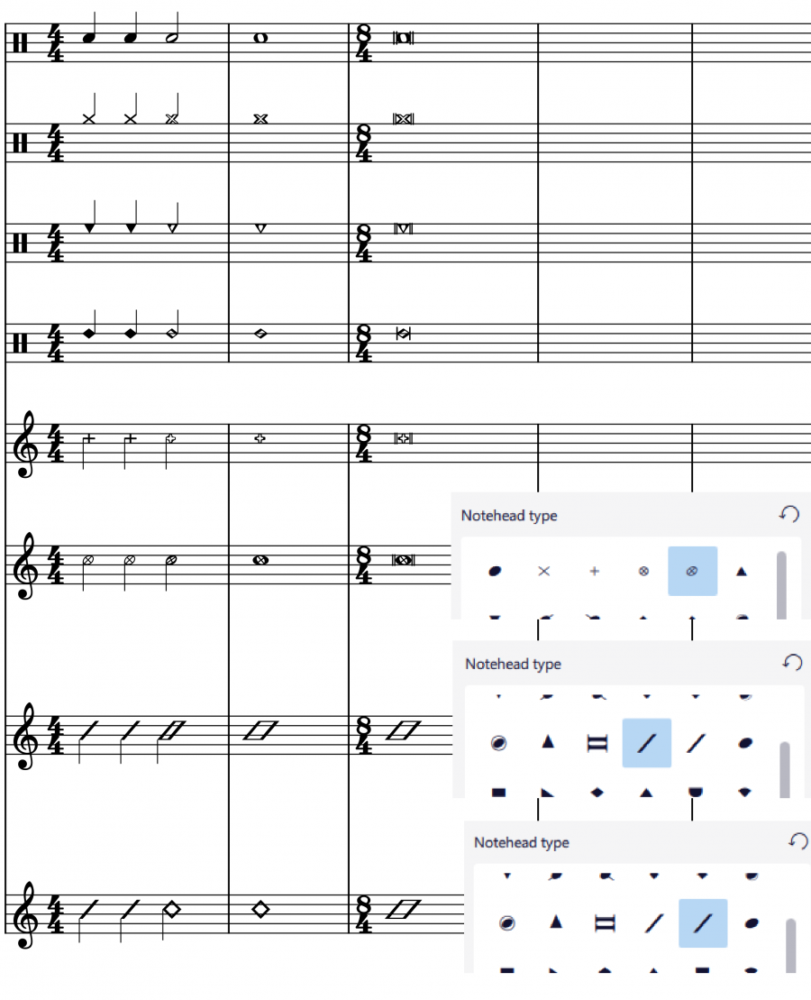
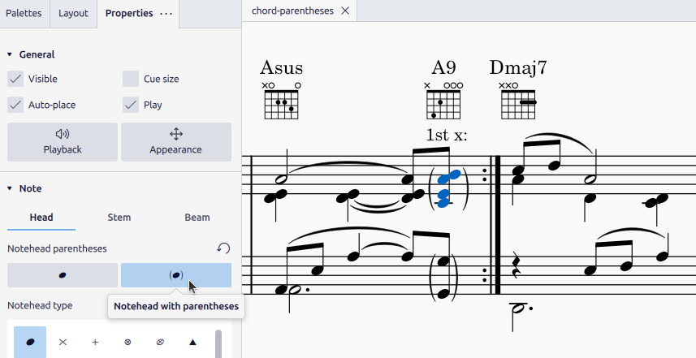

Noteheads
Overview
This chapter discusses the appearance of noteheads in MuseScore.
Notehead schemes
One aspect of music notation systems is notehead scheme. A scheme is a set of rules used to decide notehead shape's meaning, some of which are supported in MuseScore. Supported schemes relate notehead meaning to a note's:
- duration: as in the most widely used scheme.
- pitch (using movable-do or absolute pitch solfege): literally written on it, and
- pitch (relative pitch using shape note solfege): as in "shape note notation" (see reference under External links).
The most widely used scheme is very likely the only one known to most musicians. It is referred to as "Normal" in MuseScore and is the default setting for a new staff. Details of the nine schemes available in MuseScore are covered in Custom staff types:Notehead scheme.
Understanding relative pitch notations (shape note solfege, shape note notation) can enhance the reader's comprehension of this chapter. Most of the time, a notehead shape conveys one specific meaning, and that meaning is only associated with one notehead shape. Shape note solfege is like a variant of movable-do solfege that belongs to the exceptions. For example, in one type of "shape note notation", a triangle must be used to notate a relatively pitched "C4", but triangles are also read as relatively pitched "C"s or "F"s only, and triangles must sing "Fa" or a syllable agree upon by singers on-site. The loosely related shape note solfege notates interval perception much better than the "Normal" setting.
Notehead shape

Shown above, the diamond notehead can be used for harmonic notes in guitar, violin etc; and slash notehead for guitar strums etc. The cross is also known as crosshead, ghost note, or dead note.
Final display of notehead shape in MuseScore is determined by three factors: the notehead type factor, the pitch factor, and the duration factor (or note-value, rhythm).
Pitch factor
Note pitch may affect affect notehead shape, depending on the scheme, but it only happens on note(s) that do not use an overriding Notehead type property. See "Notehead type factor" section. "Normal" notehead scheme does not use pitch to determine notehead shape.
Duration factor
The duration factor is determined by a note's duration. To edit duration see Entering notes and rests and Editing notes and rests chapters. It also can be visually overridden for an individual note, while keeping the real value and playback intact.
Notehead type factor
Options available for notehead type factor depends on staff type:
- On Standard staffs (type 1a, type 1b), there are three levels:
1. Level 1 Notehead scheme of a staff : Default is "Normal".
2. Level 2 Notehead scheme of a note (option named "Notehead System" in Musescore 4.1.1):
- The default option "Auto" means "ignore this level".
- Other options: scheme to use on this note, overrides Level 1. 3. Level 3 Notehead type property of a note. Affects notehead shape if and only if the result scheme of Level 1 and Level 2 is "Normal".
- Tablatures (type 2) do not use notes. To change selected fret number(s) into crosshead, click the cross item in the Noteheads palettes. To enclose selected fret number(s) with brackets (parentheses, dead note or ghost note), use Shift+X. Only the first two items of Noteheads palettes works on Tablatures.
- On percussion staffs (type 3), instrument (like snare or hi-hat, not the "drumset" MuseScore Instrument) determines the notehead type factor. See Entering and editing percussion notation: Notehead shape chapter.
Notehead scheme is used to determine notehead shape unless overridden by individual note's Notehead type property. When notehead scheme is not overridden, note pitch may affect notehead shape, depending on the scheme. "Normal" notehead scheme does not use pitch to determine notehead shape. When a note uses an overriding Notehead type property, note pitch information does not affect notehead shape at all.
Changing notehead shape
Notehead type factor
- (Valid on standard staffs only) To change level 1 notehead scheme of a single staff, affecting all notes: 1. Right click on an empty part of the desired staff and select Staff/Part properties. 2. Click on the Advanced style properties button (opens Edit Staff Type window). 3. Select an option in Notehead scheme dropdown.
- (Valid on standard staffs only) To change level 2 notehead scheme of note(s): 1. Select note(s) on a score. 2. In the Properties panel, open Note: Head tab. 3. select an option from the Notehead system dropdown (you may need to click "Show more" at the bottom of the panel to reveal it): the default "Auto" means "ignore this level".
- (Valid on standard staffs only) To change level 3 notehead type property:
1. Select note(s) on a score.
2. Use one of the following:
- In Properties panel, open Note: Head tab, select a Notehead type, or
- Click on an item in the Noteheads palettes, or drag it onto a notehead in the score.
- To change selected fret number(s) into crosshead, click the cross item in the Noteheads palettes. To enclose selected fret number(s) with brackets (parentheses, dead note or ghost note), use Shift+X.
- To change noteheads on percussion staffs, see Entering and editing percussion notation: Notehead shape chapter.
Duration factor
- To change note duration, see Entering notes and rests and Editing notes and rests.
- To change the apparent duration without altering real value so that playback is not affected: 1. Select note(s) on a score. 2. In the Properties panel, open Note: Head tab. 3. Select the desired option from the Override visual duration (you may need to click "Show more" at the bottom of the panel to reveal it): the default "Auto" means "no override"
Adding pitch information to notes
There are six methods to change "pitch".
Most of the time, a note's pitch only affects its staff space / vertical position, to change it:
- Change note pitch, see Entering notes and rests and Editing notes and rests.
- Modify the playback pitch of note(s) on score without altering notation: In Properties panel, click General: Playback , edit Tuning (cents). This is useful for reasons explained in Musescore 3 Handbook's Tuning systems, microtonal notation system, and playback. Does not work on instruments using Muse sounds (yet) on Musescore 4.1.1
Tablatures, percussion staffs and some notehead scheme (see Overview) use notehead shape to convey pitch information:
- The brackets (parentheses, dead note or ghost note) item in Noteheads palettes can be added to a note or accidental.
- To change selected fret number(s) into crosshead, click the cross item in the Noteheads palettes. To enclose selected fret number(s) with brackets (parentheses, dead note or ghost note), use Shift+X.
- To use custom notehead shape for visual pitch representation:
1. Change level 1 setting as required for the staff.
2. Use a level 2 overriding setting on selected note(s):
- Select note(s) on a score.
- In the Properties panel, open Note: Head tab.
- Select an "Normal" from the Notehead system dropdown (you may need to click "Show more" at the bottom of the panel to reveal it).
- Assign level 3 notehead type property. Use either one of the following: * In Properties panel, open Note: Head tab, select a Notehead type, or * Click on an item in the Noteheads palettes, or drag it onto a notehead in the score.
- These note(s) will be always use this item, regardless of any future pitch change by user unlike other notes on this staff.
- Change duration factor as required.
- To loosen the relationship between note vertical position and pitch so that all notes on a staff create desired playback, take advantage of 'Transposing instruments' feature.
Changing notehead direction
To move notehead(s) horizontally to the other side of stem, use one of the following:
- Press Shift+X, or
- In Properties panel, open Note: Head tab, select a Notehead direction (you may need to click "Show more" at the bottom of the panel to reveal it).\

(Note: Contrast this command with X which moves the stem and beam horizontally and vertically to other side of the notehead)
Notehead properties

With at least one note selected in the score, notehead properties can be modified in the Properties panel in the Note section under the Head tab as follows:
- Notehead parentheses: Add or remove parentheses to a single notehead or multiple selected noteheads. When a chord is selected a single set of parentheses will be drawn across the entire chord. You can break the parentheses into groups by selecting a single note in a parenthesized chord and pressing the Normal notehead button. Properties such as visibility and offsets can be set individually for either the left or right parenthesis.
- Notehead type: See overview and changing notehead shape.
- Hide notehead: Makes notehead invisible, see Properties: visibility.
- Small notehead
- Duration dot position: This provides an alternative vertical offset for the duration dot.
- Show more / Show less button
- Notehead system: level 2 Notehead scheme, see Overview. The default "Auto" means "ignore this level".
- Override visual duration: change duration factor, see Overview. "Auto" means "no override".
- Note direction: See Changing notehead direction (above).
- Notehead offset: This changes the offset of the notehead only (to change the offset of the complete note, use "Offset" in Properties: Appearance instead).
Notehead style and font
There are 8 font options (two new options compared to MuseScore 3) for notehead set in Format→Style→Score. Notehead does not use style profiles (Templates and styles).\ Noteheads palette is displayed with Bravura font.
Sharing noteheads between voices
When two notes in different voices coincide on the same beat, they can either share a single notehead, or else be offset to allow the display of both noteheads. This is done automatically by MuseScore according to certain rules (see below).
To force two offset noteheads in different voices to share a single notehead, use one of the following methods:
- Make the smaller-value notehead invisible. This works for the majority of cases.
- Select the smaller value notehead and in the Note section of the Properties toolbar change "Head type (visual only)" to that of the higher value note.
Rules for automatically sharing or offsetting noteheads:
- Notes with stems in the same direction do not share noteheads.
- Dotted notes do not share noteheads with undotted notes.
- Black notes do not share noteheads with white notes.
- Whole notes never share noteheads.
Remove duplicate fretmarks in tablature
If you are using paired standard and tablature staves you will come across situations where a shared notehead in the standard staff generates two fretmarks in tablature. In this case simply hide one of the fretmarks by making it invisible.